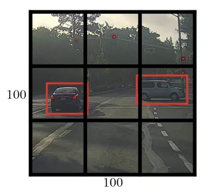
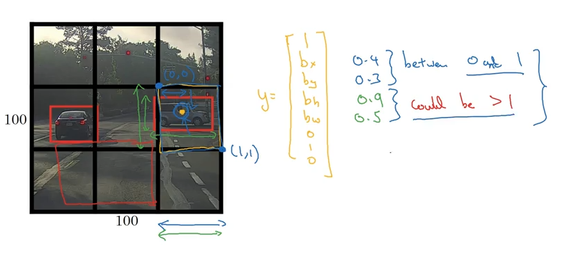
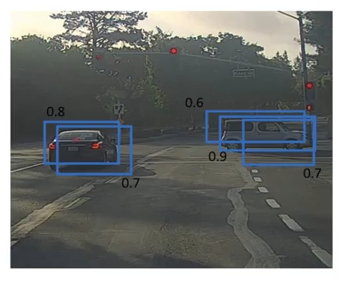
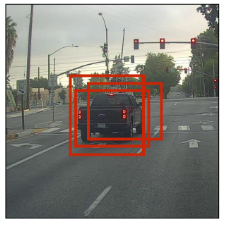

Object Detection Rough Intuition
Don’t yet understand how this works in practice, but wanted to get some thoughts down about the theory of how this all works.
Overview
So for a given image, our model’s prediction will have the following scheme:
- Generate a box around an object, defined by
bx,by: coordinates of the center of the boxbw,bh: width and height of the boxes
- Note: these values are scaled as percentages between
(0, 0)and(1, 1), as we assume unit length of the image
from IPython.display import Image
Image('images/bounding_box.png')Then (in this example, a 3-class detection problem) we provide the following vector for our prediction:
- Probability that there’s any object
- The 4 parameters listed above
- Probability that we’re looking at each of the objects
Image('images/bounding_box_labels.png')
Loss Function
Our loss function is dependent on whether or not we predict that an object is there
(Intuitively, though, I figured we’d implement some sort of log-loss cross/entropy function here…)
If y = 1
$((\hat{y_1} - y_1)^2 + … + (\hat{y_8} - y_8)^2)$
If y = 0
$(\hat{y_1} - y_1)^2$
Generating Boxes
So assuming that we’ve got labelled data (by class, location, and bounding box size– which the course didn’t cover generating), we know how to score our prediction. But how do we generate our boxes.
Via Convolution
We could slide over our dataset and get a bunch of boxes via convolution.
Image('images/sliding_windows.png')
YOLO
This is the first the course uses when it dives into the YOLO algorithm, with out any suggestion of how those red boxes are generated. Idk.
They also suggest using something closer to a 19x19 grid, but leave it as 3s for illustration.
Image('images/yolo_basic.png')
For a 3-class problem apply the same 1x8 vector as above, giving you a final matrix representation of 3x3x8. So if your image starts off 100x100x3, make sure whatever Convoluation/Pooling steps along the way get you to an output of this size.
Image('images/yolo_bounding_boxes.png')
Then, once you’ve got all of your boxes, you want to trim down the redundant ones.
Non-Maximum Suppression
So when you’ve got two boxes that overlap, like the ones below, you can define a metric Intersection Over Union
Image('images/iou1.png')
Here we represent intersection with the yellow, union with the green.
Image('images/iou2.png')
We can apply it to images that returned more boxes
Image('images/non_max_1.png')
To simply our representation of where we think the objects are.
Image('images/non_max_2.png')
More generally, the idea is that we use the following algorithm
For each individual class
Discard all boxes with p_c < .6
While remaining boxes:
Pick box w largest p_c
Discard any remaining box w IoU >= 0.5 w this box
To go from busy pictures like this
Image('images/yolo_multiclass_1.png')
to incrementally-less busy pictures
Image('images/yolo_multiclass_2.png')
Until we have a box per object
Image('images/yolo_multiclass_3.png')
(Omitted, the blue, yellow, and green reductions, for some reason.)